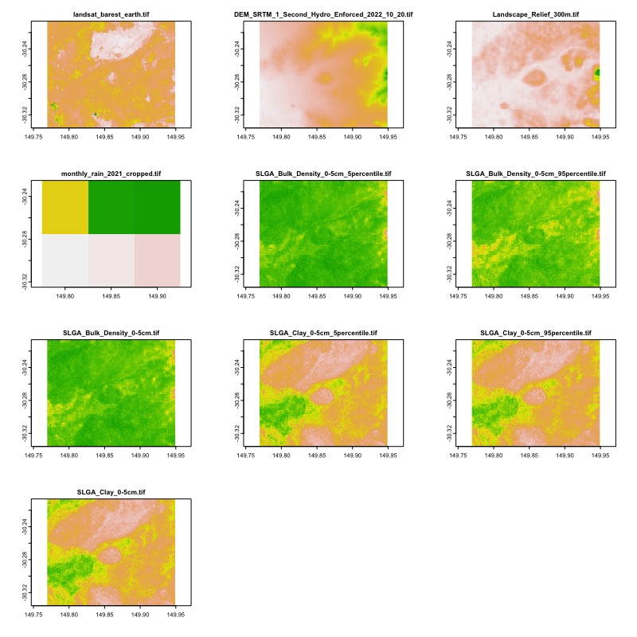

Introduction
Summary
Welcome to Session 1. This session introduces you to the dataharvester package by showing you how to download files with minimal code input, which is achieved by running the harvest() function.
Your instructor will briefly introduce the AgReFed Data-Harvester project and get you set up for the remainder of the workshop.
Demo 1: Authentication
Run the following code in your RStudio session:
library(dataharvester)
initialise_harvester("r-reticulate")The function will verify that the environment "r-reticulate" is available and contains all the required dependencies. Once this is complete, you may want to authenticate to Google Earth Engine (GEE). To do this, run the following code:
authenticate_ee(auth_mode = "rstudiocloud")In the future, you can bundle the two functions above into a single call:
initialise_harvester("r-reticulate",
earthengine = TRUE,
auth_mode = "rstudiocloud")The function will now try to authenticate to Google Earth Engine. This might involve opening a browser window and copying a code into the console. Because we are using RStudio Cloud, some warings will appear. Your instructor will explain what to do, but an explanation is also provided in the troubleshooting section here.
Demo 2: YAML config
The Data-Harvester uses a YAML configuration file to perform bulk downloads in a single command.
YAML is a human-readable data-serialization language. It is commonly used for configuration files and in applications where data is being stored or transmitted. YAML files are easy to read and write, and are often used to configure software applications. A typical YAML file looks like this:
---
name: "John Smith"
age: 42
occupation: "gardener"Looks familiar? If you have used Markdown or R Markdown, YAML is used to define the metadata for the document.
A YAML configuration file helps to keep track of the data you have downloaded and the analyses you have performed. It also allows you to easily reproduce your analyses and share them with others.
Basic usage
Below is the YAML file for basic_config.yaml which can be found in the assets folder in RStudio Cloud.
---
outpath: downloads/
target_bbox: [149.769345, -30.335861, 149.949173, -30.206271]
target_dates: [2021]
target_res: 6.0
target_sources:
DEA: [landsat_barest_earth]To run the configuration file, we use the harvest() function. The function takes a single argument, path_to_config, which is the path to the YAML file. The path can be either relative or absolute.
A relative path is a path that is relative to the current working directory. For example, if you are working in the dataharvester directory, the path to the basic_config.yaml file, stored in the assets folder, is assets/basic_config.yaml.
An absolute path is a path that starts from the root directory. For example, the absolute path to the basic_config.yaml file might be /home/rstudio/dataharvester/assets/basic_config.yaml (note: this is not the actual path to the file).
Both paths point to the same file.
Relative paths are useful when you are working in a project directory, as they are shorter and easier to remember. Relative paths also allow you to share your code with others, as they will not need to change the path in the configuration file as long as they are working in the same folder. Absolute paths are useful when you are working in a different directory, or when you are working on a local machine.
Making sure that your path is correct (and it should be, since you are on RStudio Cloud), run the code below:
harvest("assets/basic_config.yaml")If you run the same config again, the function recognises that a file has been downloaded and will not re-download it. This is useful if you want to re-run the configuration file to add more data sources – we will see this in action later.
Adding multiple data sources
Additional data sources can be added to the configuration file by adding a new key to the target_sources list. Below we have added sources from DEM, Landscape, SILO and SLGA collections. Copy the new lines and add them to basic_config.yaml:
---
outpath: downloads/
target_bbox: [149.769345, -30.335861, 149.949173, -30.206271]
target_dates: [2021]
target_res: 6.0
target_sources:
DEA: [landsat_barest_earth]
# add the new lines below --------------------
DEM: [DEM]
Landscape: [Relief_300m]
SILO:
monthly_rain: [sum]
SLGA:
Bulk_Density: [0-5cm]
Clay: [0-5cm]Let’s run the above configuration file and preview the output data. You should already have the DEA data downloaded, so the function will only download the new data sources. This time, the argument preview = TRUE will be added to the harvest() function, which will allow us to preview the data that will be downloaded.
harvest("assets/basic_config.yaml",
log_name = "multi_config",
preview = TRUE)You should see a figure similar to the one below:

Demo 3: Google Earth Engine
We will continue to use the same configuration file, basic_config.yaml, to download data from Google Earth Engine. Below, we add a new key to the target_sources list, called GEE. session 2 will cover how to use the GEE API in more detail, but for now, we will preview how the YAML configuration file can be used download data from GEE.
---
outpath: downloads/
colname_lat:
colname_lng:
target_bbox: [149.769345, -30.335861, 149.949173, -30.206271]
target_dates: [2021]
target_res: 6.0
target_sources:
DEA: [landsat_barest_earth]
DEM: [DEM]
Landscape: [Relief_300m]
SILO:
monthly_rain: [sum]
max_temp: [sum]
SLGA:
Bulk_Density: [0-5cm]
Clay: [0-5cm]
# add the new lines below --------------------
GEE:
preprocess:
collection: LANDSAT/LC09/C02/T1_L2
mask_clouds: true
reduce: median
spectral: [NDVI]
download:
bands: [NDVI, SR_B2, SR_B3, SR_B4]
scale: 100
format: tif
overwrite: falseThe configuration will download a Landsat 9 images for the year 2021, composite them all to a single image using the median reducer, and calculate the NDVI spectral index. The output image will be downloaded as a GeoTIFF file, with the NDVI spectral index and the RGB bands (SR_B2, SR_B3, SR_B4) included in the raster image.
Exercise 1: Adding even more sources
Exercise 2: GEE
Wrapping up
This is the end of Session 1. In this session we have covered setup and using the YAML configuration file to download from multiple API sources. In the next session (Session 2), we will cover how to use individual download functions to create custom workflows for downloading data.
See you there!